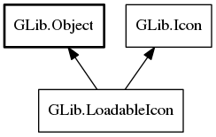

LoadableIcon
Object Hierarchy:
Description:
Extends the Icon interface and adds the ability to load icons from streams.
All known implementing classes:

Namespace: GLib
Package: gio-2.0
Content:
Methods:
Inherited Members:
All known members inherited from class GLib.Object
All known members inherited from interface GLib.Icon